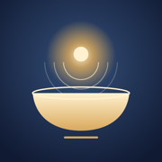
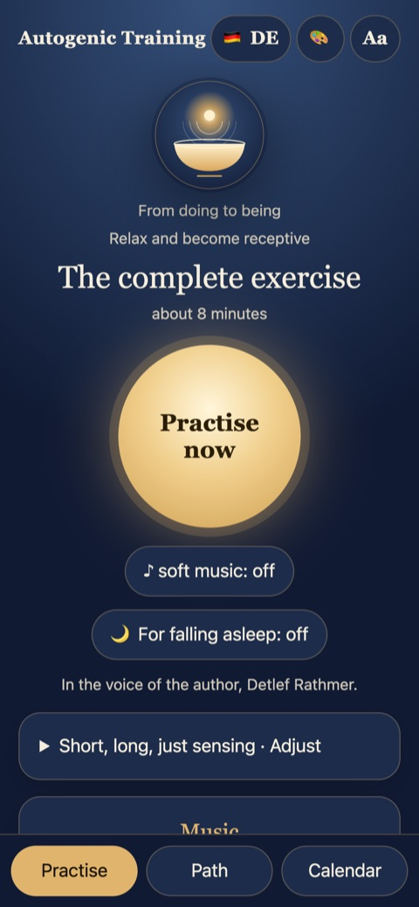
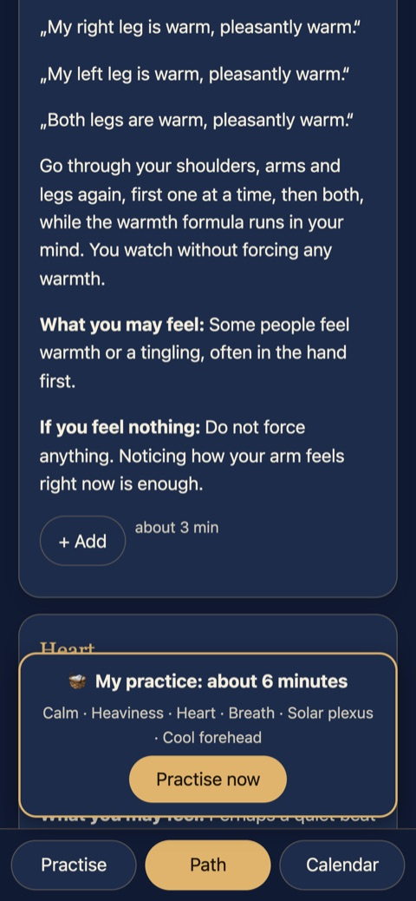
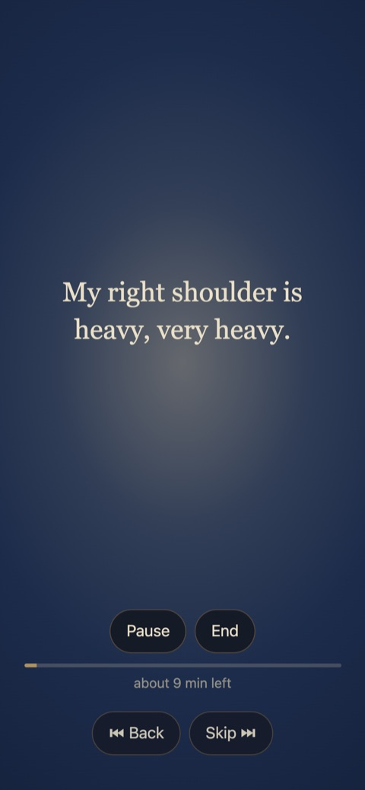
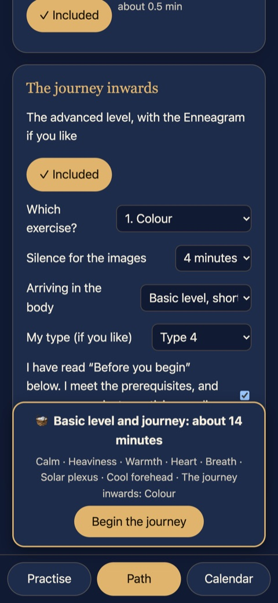
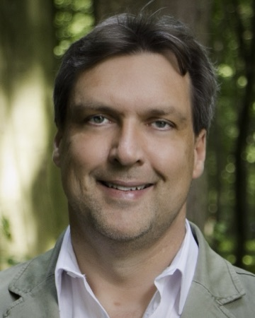

The practice app

Autogenic Training
From doing to being.
Relax and become receptive: the app guides you through the seven exercises of the basic level and on into the advanced level. You hear the formulas in the author’s voice.
Available now
Unlock the full version: €12.99
Calm and heaviness are free to practise. The full version is a one-time payment of €12.99 (introductory price, later €14.99), no subscription. You receive your access by email.
The film about the app
90 seconds: the exercises, your own practice plan, the journey inwards.
Music: “Transcendent Peace” by Detlef Rathmer.
A look inside
This is how the app looks on a phone.




What the app offers
Calm, heaviness, warmth, heart, breath, solar plexus and cool forehead. For each exercise: what to do, what you may feel, what to do if you feel nothing, and safety notes where needed.
Add or leave out stages and see at once about how long the practice takes. Also: short, long or just sensing.
The advanced level in eight stages, from colour to a question turned inwards. With the Enneagram if you like.
A short sentence of your own, the general one or one for your Enneagram type. Knowing your type is not required.
Without the return, then soft music for 15 to 60 minutes if you like, fading out.
During practice, jump to the start of a section and see how much time is left.
Where the method comes from and why people practise it. A practice calendar with your own notes, which stay on your device.
Blue, green, red or beige, in English and German. No analytics or advertising tools.
My path
Detlef Rathmer
The voice
The author

Detlef RathmerNon-fiction author, Enneagram expert, lecturer and coach. A naturopath since 2000, with a focus on classical homeopathy.
Important notes: Autogenic training does not replace treatment by a doctor, a naturopath (Heilpraktiker) or any other therapist.
Do not practise without consulting a professional first, and do not practise on your own with this app, if you have acute psychosis, schizophrenia, severe depression, thoughts of suicide or a dissociative disorder.
Talk to your doctor, naturopath or other therapist beforehand if you have experienced trauma, tend to worry intensely about your body, have borderline personality disorder or a serious physical illness (for example of the heart or the nervous system), or are pregnant.
Do not practise while driving or operating machinery. In an emergency, call your local emergency number (112 in the EU, 999 or 112 in the UK).